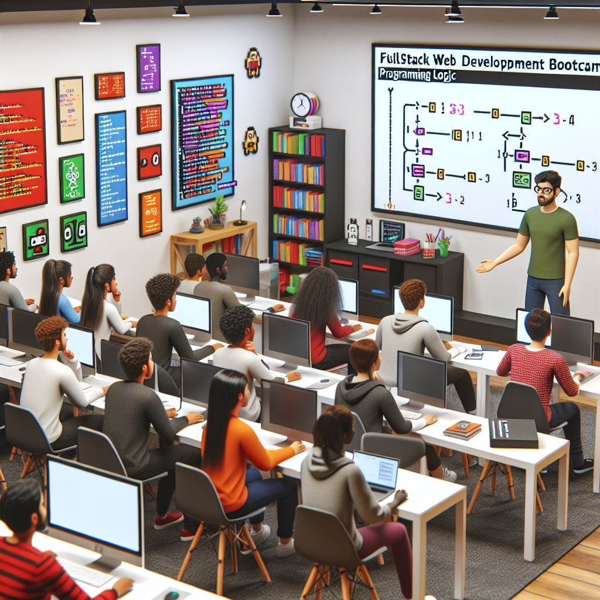
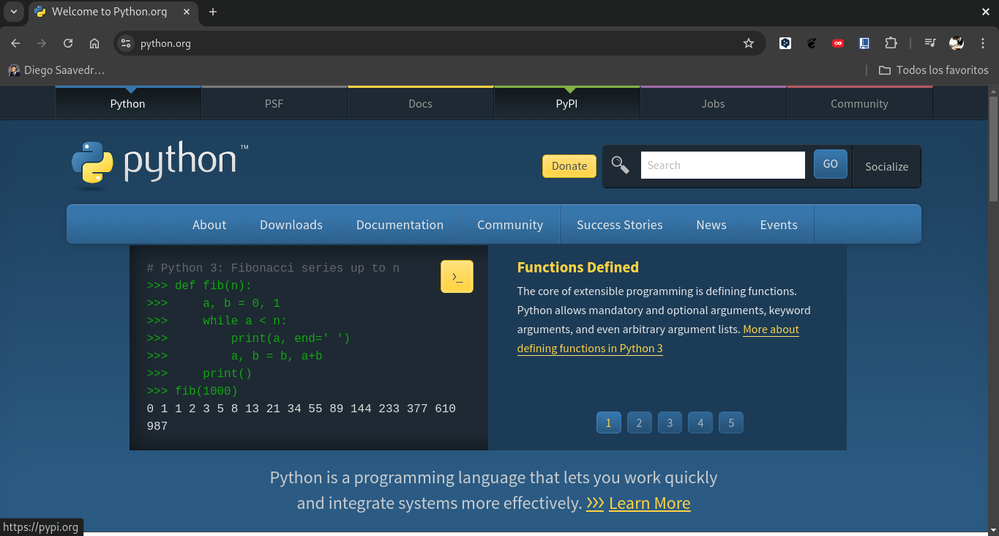
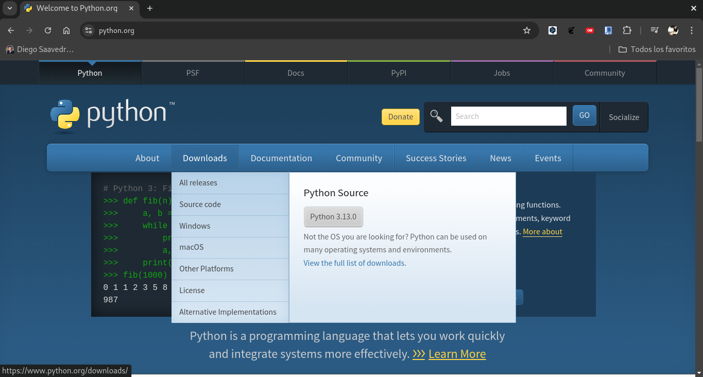
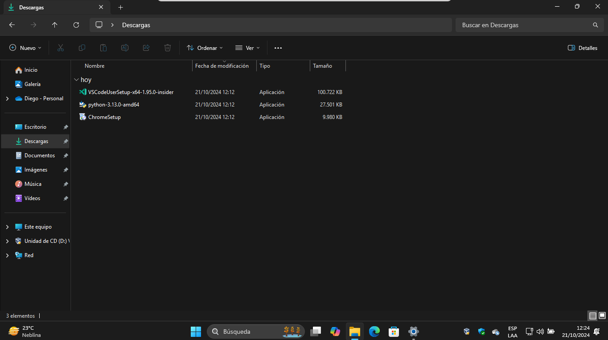
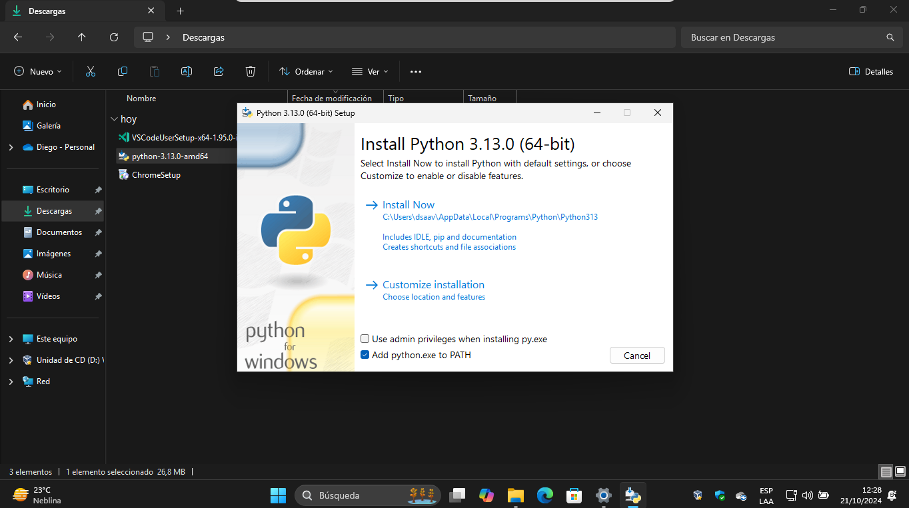
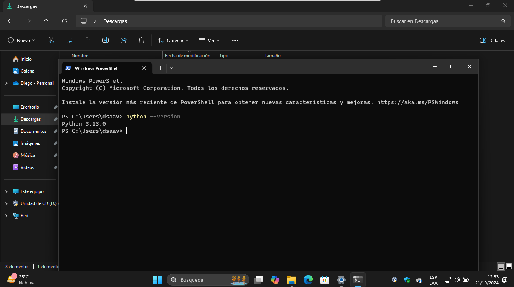
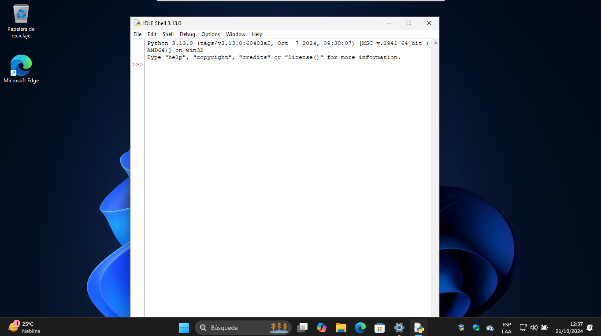
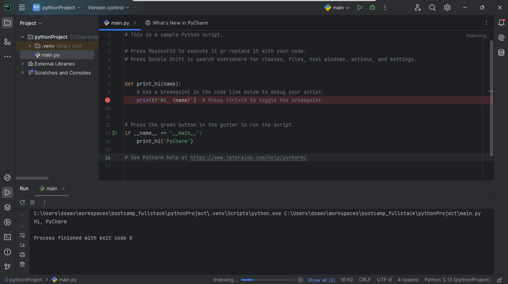
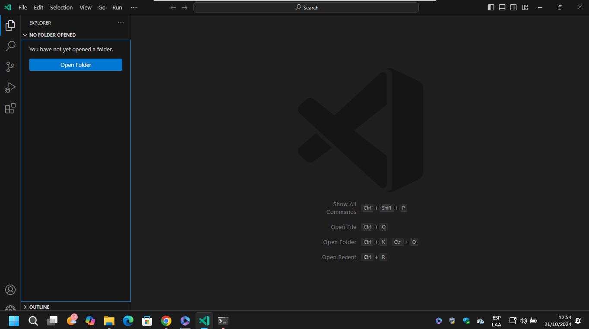
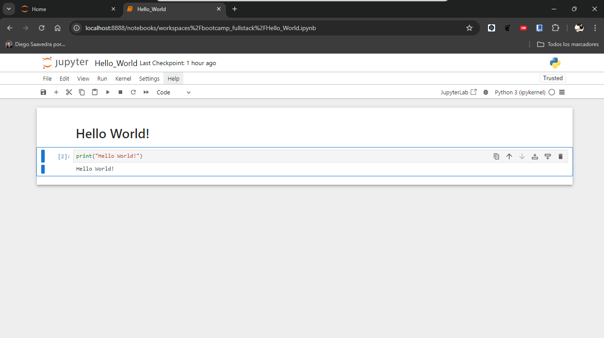

Introducción e Instalaciones Necesarias.

En este Bootcamp aprenderemos las bases y fundamentos necesarios del desarrollo web fullstack, esto es desde el frontend hasta el backend.
Para ello, utilizaremos Python como lenguaje de programación principal, y Django y FastAPI como frameworks para el desarrollo de aplicaciones web.
Por otra parte esta tambien el frontend, donde utilizaremos HTML, CSS y JavaScript para el desarrollo de interfaces de usuario, aprenderemos acerca de Node.js y React.js para el desarrollo de aplicaciones web del lado del cliente.
Sin embargo antes de empezar con el desarrollo web, es necesario tener una base sólida en programación, por lo que en este primer módulo aprenderemos acerca de Python, un lenguaje de programación de alto nivel, interpretado y orientado a objetos.
Por otra parte es necesario saber que cualquier lenguaje de programación no es suficiente para poder desarrollar sistemas que permitan resolver problemas del diario vivir, es necesario tener un entorno de desarrollo adecuado, por lo que en este módulo también aprenderemos acerca de los entornos de desarrollo que podemos utilizar para programar en Python.
En este módulo aprenderemos acerca de los siguientes temas:
Introducción General a la Programación
Instalación de Python
Uso de REPL, PEP 8 y Zen de Python
Entornos de Desarrollo
Introducción General a la Programación
Si más preámbulos, empecemos con la introducción general a la programación.
Es el proceso de diseñar e implementar un programa de computadora, es decir, un conjunto de instrucciones que le dicen a una computadora qué hacer.
Es una habilidad muy valiosa en el mundo actual, ya que la mayoría de las tareas que realizamos a diario involucran el uso de computadoras y software.
Nos permite automatizar tareas, resolver problemas de manera eficiente y crear aplicaciones y sistemas que nos ayudan en nuestra vida diaria.
En este módulo aprenderemos los fundamentos de la programación utilizando Python, un lenguaje de programación de alto nivel, interpretado y orientado a objetos.
Antes de introducirnos en el aprendizaje del lenguaje de programación, es importante conocer que debemos desarrollar la lógica de la prograamción, es decir, la habilidad de pensar de manera lógica y estructurada para resolver problemas de manera eficiente.
Analicemos el siguiente problema para entender la importancia de la lógica de programación:
- Problema: Supongamos que queremos escribir un programa que imprima los números del 1 al 10.
¿Cómo resolverías este problema?
Una posible solución sería escribir un programa que imprima los números del 1 al 10 de manera secuencial.
print(1)
print(2)
print(3)
print(4)
print(5)
print(6)
print(7)
print(8)
print(9)
print(10)En el ejemplo anterior, hemos resuelto el problema de imprimir los números del 1 al 10 de manera secuencial. Sin embargo, esta solución no es escalable, ya que si quisiéramos imprimir los números del 1 al 1000, tendríamos que escribir 1000 instrucciones de impresión.
Una solución más eficiente sería utilizar un bucle para imprimir los números del 1 al 10 de manera automática.
for i in range(1, 11):
print(i)En el ejemplo anterior, hemos utilizado un bucle for para imprimir los números del 1 al 10 de manera automática. Esta solución es más eficiente y escalable, ya que podemos cambiar el rango del bucle para imprimir los números del 1 al 1000 sin tener que modificar el código.
- Problema: Supongamos que queremos escribir un programa que imprima un saludo personalizado.
¿Cómo resolverías este problema?
Una posible solución sería escribir un programa que solicite al usuario su nombre y luego imprima un saludo personalizado.
name = input("Ingrese su nombre: ")
print("Hola, " + name + "!")En el ejemplo anterior, hemos resuelto el problema de imprimir un saludo personalizado solicitando al usuario su nombre. Esta solución es interactiva y personalizada, ya que el saludo se adapta al nombre del usuario.
En resumen, la lógica de programación es la habilidad de pensar de manera lógica y estructurada para resolver problemas de manera eficiente. Es fundamental para desarrollar programas y sistemas que nos ayuden en nuestra vida diaria.
A continuación te ofresco algunas páginas que puedes revisar por tu cuenta y que te permitirán practicar el desarrollo de la lógica de programación:
Instalación de Python

Para instalar Python en tu computadora, sigue los siguientes pasos:
- Ve al sitio web oficial de Python en https://www.python.org/.

- Haz clic en el botón de descarga de Python.

Selecciona la versión de Python que deseas instalar (recomendamos la versión más reciente).
Descarga el instalador de Python para tu sistema operativo (Windows, macOS o Linux).

- Ejecuta el instalador de Python y sigue las instrucciones en pantalla para completar la instalación.

Una vez que hayas instalado Python en tu computadora, puedes verificar que la instalación se haya realizado correctamente abriendo una terminal y ejecutando el siguiente comando:

python --versionSi la instalación se realizó correctamente, verás la versión de Python instalada en tu computadora.
Uso de REPL, PEP 8 y Zen de Python
En esta sección, aprenderemos acerca de REPL, PEP 8 y Zen de Python.
REPL
REPL (Read-Eval-Print Loop) es un entorno interactivo que permite escribir y ejecutar código de Python de manera interactiva. Es una excelente herramienta para probar y experimentar con el lenguaje de programación.
Para abrir el REPL de Python, abre una terminal y ejecuta el siguiente comando:
pythonUna vez que hayas abierto el REPL de Python, puedes escribir y ejecutar código de Python de manera interactiva. Por ejemplo, puedes escribir una expresión matemática y ver el resultado:
>>> 2 + 2
>>> 4
>>> 3 * 4
>>> 12
>>> 10 / 2
>>> 5.0
>>> 2 ** 3
>>> 8
>>> "Hola, Mundo!"
>>> 'Hola, Mundo!'
>>> "Hola, " + "Mundo!"
>>> 'Hola, ' * 3
>>> 'Hola, Hola, Hola, '
>>> print("Hola, Mundo!")
>>> Hola, Mundo!Pep 8
PEP 8 (Python Enhancement Proposal 8) es una guía de estilo para escribir código de Python de manera clara y legible. Es una excelente referencia para seguir buenas prácticas de codificación y mantener un código limpio y ordenado.
Algunas recomendaciones de PEP 8 son:
Utiliza sangrías de 4 espacios para indentar el código.
Utiliza líneas en blanco para separar funciones y clases.
Utiliza nombres descriptivos para las variables y funciones.
Utiliza comentarios para explicar el código y hacerlo más legible.
Utiliza espacios alrededor de los operadores y después de las comas.
Utiliza comillas simples o dobles de manera consistente para las cadenas de texto.
Utiliza la función print() para imprimir en la consola.
Zen de python.
El Zen de Python es una colección de 19 aforismos que resumen los principios de diseño y filosofía de Python. Fueron escritos por Tim Peters, uno de los desarrolladores originales de Python, y se pueden ver en cualquier instalación de Python utilizando el siguiente comando:
import thisAlgunos de los aforismos más conocidos del Zen de Python son:
Hermoso es mejor que feo.
Explícito es mejor que implícito.
Simple es mejor que complejo.
Complejo es mejor que complicado.
La legibilidad cuenta.
Los casos especiales no son lo suficientemente especiales como para romper las reglas.
Si la implementación es difícil de explicar, es una mala idea.
Si la implementación es fácil de explicar, puede que sea una buena idea.
Los errores nunca deberían pasar en silencio.
A menos que sean silenciados.
En la cara de la ambigüedad, rechaza la tentación de adivinar.
Debería haber una, y preferiblemente solo una, manera obvia de hacerlo.
Aunque esa manera puede no ser obvia al principio a menos que seas holandés.
En el ejemplo anterior, hemos utilizado el REPL de Python para ejecutar expresiones matemáticas y cadenas de texto. Es una excelente manera de probar y experimentar con el lenguaje de programación.
Entornos de Desarrollo
Un entorno de desarrollo es un conjunto de herramientas que nos permiten escribir, depurar y ejecutar código de manera eficiente. Es fundamental para desarrollar programas y sistemas de manera efectiva.
Existen varios entornos de desarrollo que podemos utilizar para programar en Python. Algunos de los más populares son:
- IDLE: Es el entorno de desarrollo integrado (IDE) oficial de Python. Viene incluido con la instalación de Python y es una excelente opción para programar en Python.

- PyCharm: Es un IDE de Python desarrollado por JetBrains. Es una excelente opción para programar en Python, ya que ofrece muchas características y herramientas útiles.

- Visual Studio Code: Es un editor de código desarrollado por Microsoft. Es una excelente opción para programar en Python, ya que ofrece muchas extensiones y herramientas útiles.

- Jupyter Notebook: Es una aplicación web que nos permite crear y compartir documentos interactivos que contienen código de Python, visualizaciones y texto explicativo.

En este bootcam utilizaremos Visual Studio Code como editor de código para programar en Python. Sin embargo, te recomiendo que explores otros entornos de desarrollo y elijas el que mejor se adapte a tus necesidades y preferencias.
5 Consejos para mejorar la lógica de programación.
Practica regularmente: La práctica es fundamental para mejorar la lógica de programación. Dedica tiempo a resolver problemas de programación y desafíos lógicos de manera regular.
Descompón el problema: Divide los problemas complejos en problemas más pequeños y manejables. Esto te ayudará a abordar el problema de manera más efectiva y eficiente.
Utiliza pseudocódigo: Antes de escribir código, utiliza pseudocódigo para planificar y diseñar tu solución. Esto te ayudará a visualizar el problema y encontrar una solución más clara.
Comenta tu código: Utiliza comentarios para explicar tu código y hacerlo más legible. Esto te ayudará a entender tu código y a identificar posibles errores.
Colabora con otros: Trabaja en equipo con otros programadores para resolver problemas de programación. La colaboración te permitirá aprender de otros y mejorar tus habilidades de programación.
¡Espero que estos consejos te sean útiles para mejorar tu lógica de programación!
Conclusiones
En este módulo hemos aprendido acerca de la introducción general a la programación, la instalación de Python, el uso de REPL, PEP 8 y Zen de Python, y los entornos de desarrollo que podemos utilizar para programar en Python.